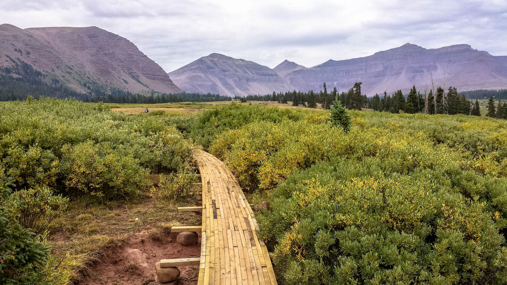
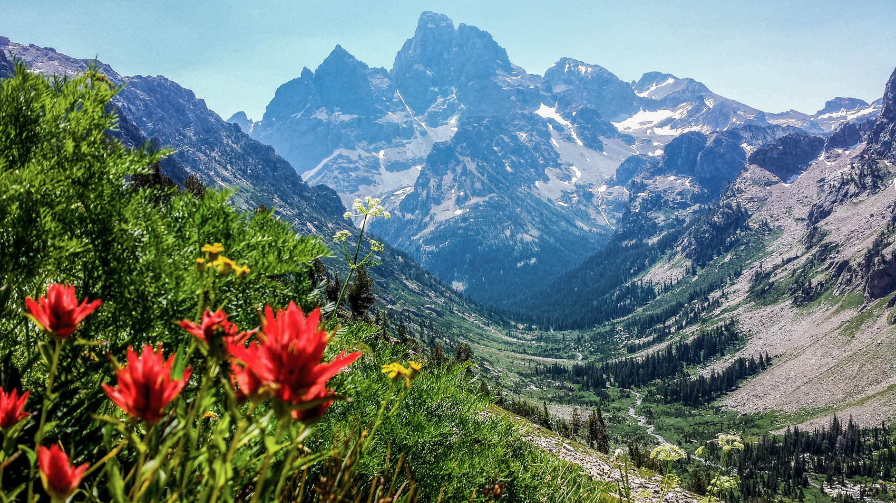
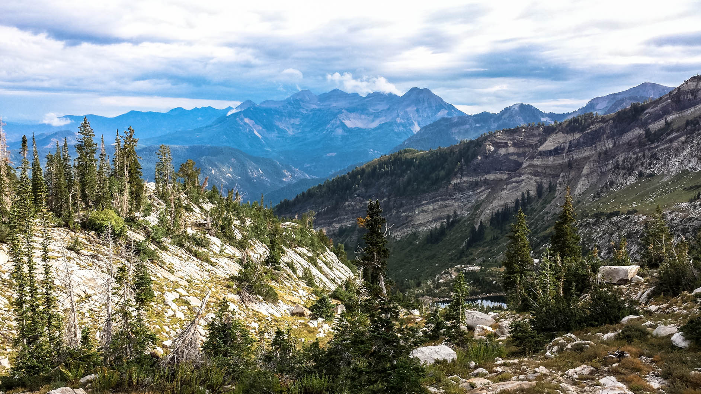

Europe 2012
June 24 - August 12, 2012
Well it seems that I was right about my guess that, "Eau Potable" means drinkable water. Cause if it hadn't..(~1.5 month trip backpacking thru Europe)

National Park Roadtrips
August 2011
Four friends, one car, five national parks: Zion, Bryce Canyon, Capitol Reef, Tetons, Glacier National Parks. Nearly ran the risk of turning into one of those BBC TopGear roadtrip specials.
King's Peak - High Uintas Range, Utah
August 2013
At 13,527' (4,123m), King's Peak is the highest peak in Utah.
Grand Teton NP, Wyoming Weekend Trip
July 2013
A short snippet of trail that's part of the Teton Crest Trail.